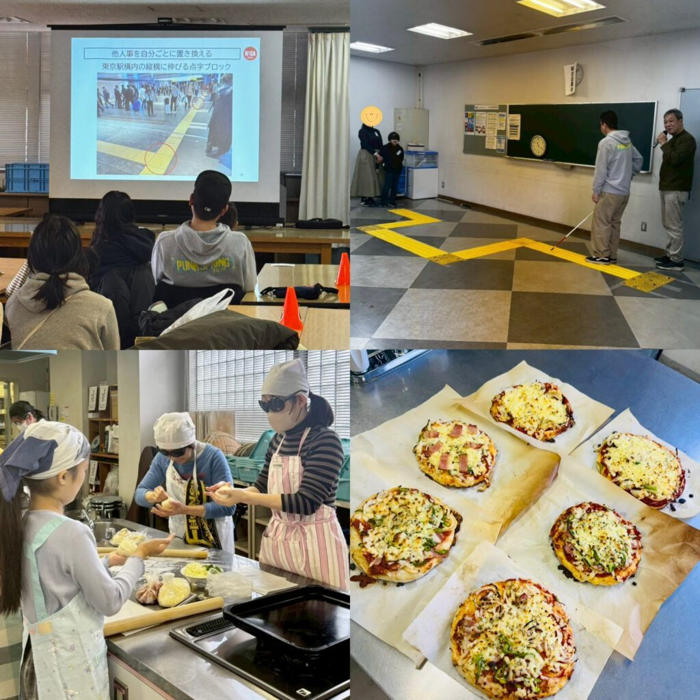

活動報告
日本インクルーシブ・クリエーターズ協会の活動実績です。1ページが長くなりすぎないよう、年ごとに分けて掲載しています。
最近の活動
-
2026年2月
北区立滝野川文化センター区民講座にて、弱視体験メガネをつけてピザとパンを作る体験や、アイマスクをつけて点字ブロックリレーなどのワークショップを開催しました。お子様にもご参加いただきワイワイ楽しくご体験頂きました。
-
2025年12月
大丸東京店にてインクルーシブワークショップを開催しました。その時の様子が 大丸松坂屋の note 記事（外部サイト） に掲載されました。
-
2025年11月
都築電気株式会社 東京オフィスにて、視覚障害の多様性、インクルーシブデザインとユニバーサルデザインの違いについてなどの講習会、行動観察ワークショップを行いました。
年ごとの活動
